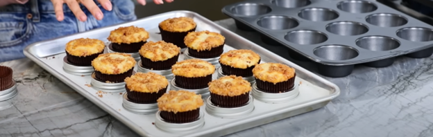

I love to bake and read about baking. In addition to buying baking cookbooks and watching baking competition shows, I also enjoy baking myself. Experimenting with ingredients is one of the aspects of baking that I enjoy the most. Cupcakes and layer cakes are without a doubt my favorite things to bake. Even though I'm not the best at decorating them, I appreciate every minute of the frequently lengthy process.
